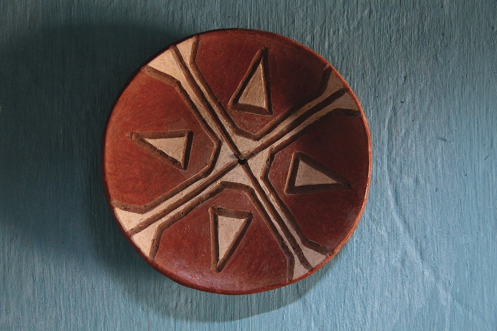
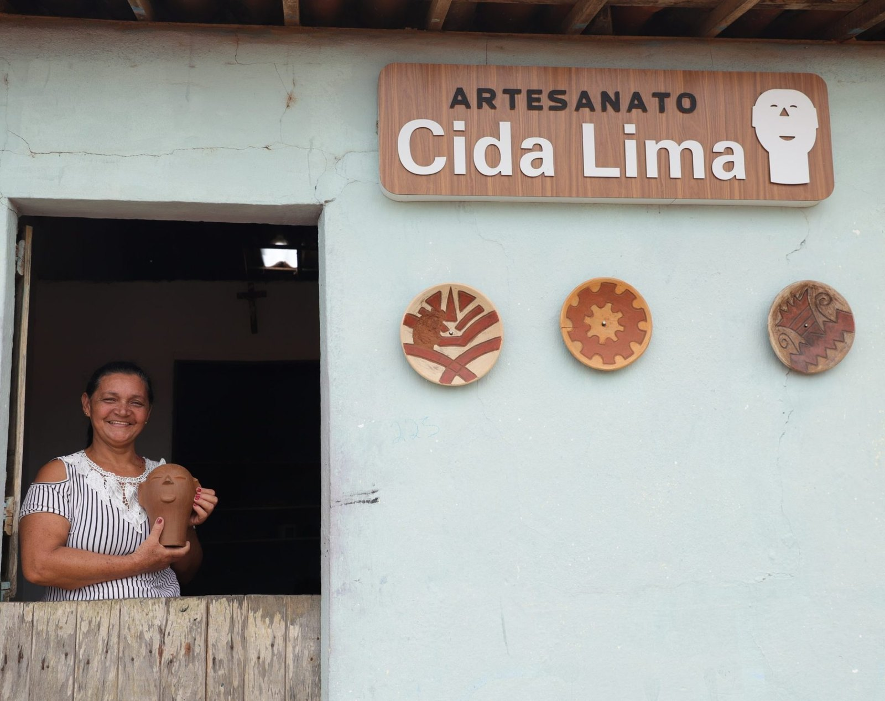
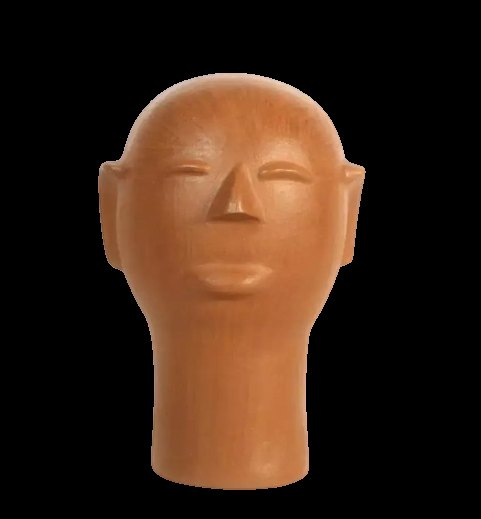
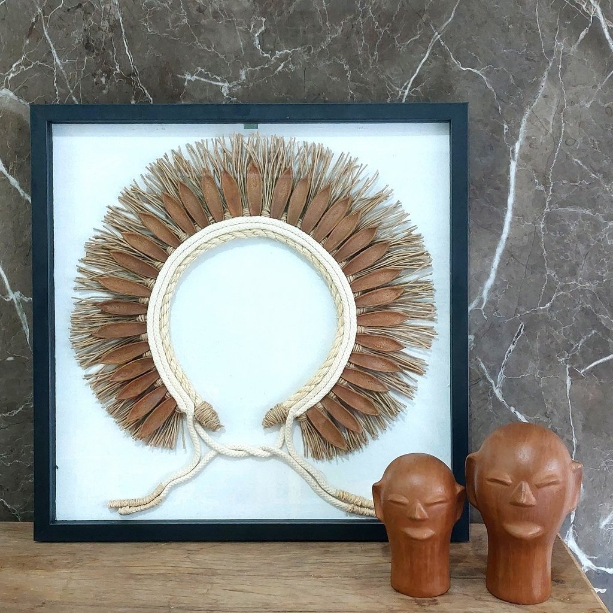
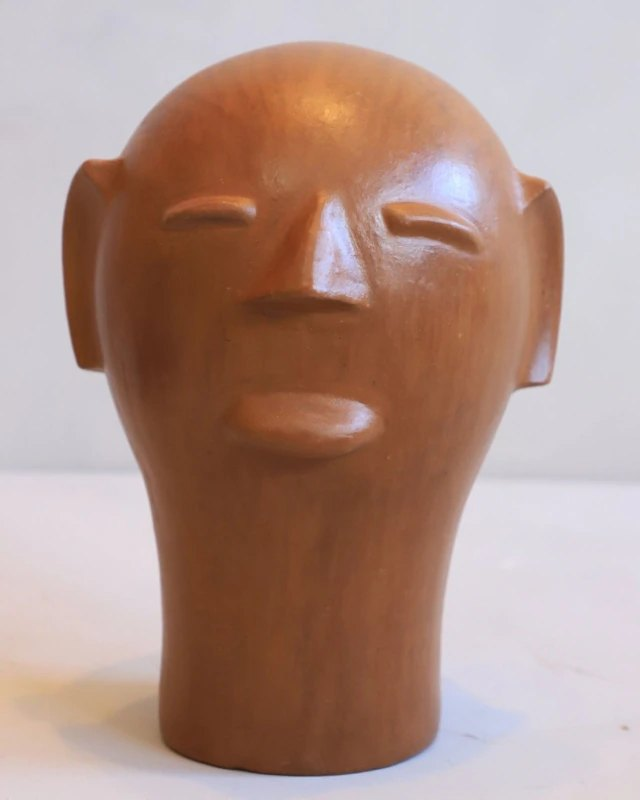
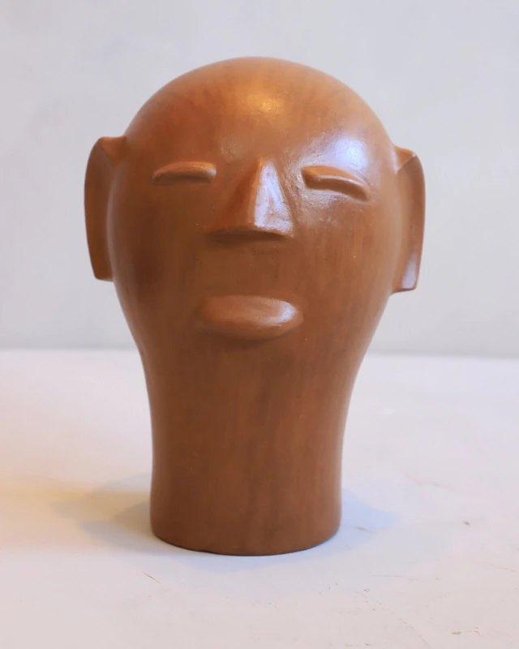

Mestra Cida Lima
Louça de caboclo, ex-votos e cabeças que ganharam o Brasil.
Cida Lima é uma ceramista pernambucana de Belo Jardim que saiu da tradição familiar das louceiras para tornar as cabeças de barro uma das imagens mais reconhecidas da arte popular brasileira.
Maria Aparecida de Lima, conhecida como Mestra Cida Lima, nasceu e cresceu em Belo Jardim, no Agreste de Pernambuco, em uma família ligada ao barro. Ainda criança, por volta dos oito anos, já moldava peças para ajudar no sustento da casa.
Sua base vem da chamada louça de caboclo: uma cerâmica de herança indígena, feita sem torno, modelada diretamente pelas mãos, seca à sombra e queimada em forno. A pintura pode usar argila tauá, e os desenhos aparecem com a delicadeza de instrumentos simples, como pena de galinha.
Durante muitos anos, Cida produziu panelas, potes, travessas, pratos e outras peças utilitárias. A virada aconteceu em 2005, com o projeto Estado de Arte, conduzido por Ana Veloso em Belo Jardim, que estimulou as louceiras locais a ampliar forma, acabamento e repertório autoral.
As cabeças de barro nasceram desse encontro entre tradição, promessa religiosa, ex-voto e invenção familiar. Cida conta que as cabeças foram criadas por ela e por seu filho Jailson; a partir daí, a peça ganhou força própria e se tornou sua marca.
Em 2011, ao participar da 12ª Fenearte, Cida viu seu trabalho ser reconhecido no Salão dos Mestres. Desde então, suas cabeças circulam por galerias, casas e coleções, mantendo viva a memória das louceiras de Belo Jardim.
A cabeça de barro virou rosto, memória e futuro para a mestra de Belo Jardim.
Para observar na peça
- As feições simples e expressivas das cabeças de barro
- A relação com ex-votos e promessas populares
- Marcas do modelado manual, sem uso de torno
- Cores de argila, tauá e acabamento natural
- A passagem da peça utilitária para a peça autoral
Materiais e técnica
Galeria de peças e referências de estilo
Obras e peças públicas reunidas para reconhecer linguagem, materiais e técnica. As peças da exposição são vistas apenas ao vivo.






Fontes e créditos
- Revista Continente — Paneleiras: Ofício que se originou do barro https://revistacontinente.com.br/edicoes/129/paneleiras--oficio-que-se-originou-do-barro
- Retrobel — Mestra Cida Lima: transformação pelo barro https://blog.retrobel.com.br/mestra-artesa-cida-lima-transformacao-pelo-barro/
- Retrobel — Cabeça de Cerâmica Cida Lima GG https://retrobel.com.br/produtos/cabeca-de-ceramica-cida-lima-gg-38cm/
- Retrobel — Cabeça de Cerâmica Cida Lima M https://retrobel.com.br/produtos/cabeca-de-ceramica-cida-lima-m-23cm/
- Portal da Arte Nordeste — Mestra Cida Lima https://portaldaartenordeste.com.br/mestra-cida-lima/
- Imaterial Artesanato Brasileiro — Cabeça Cida Lima PP https://www.imaterial.art.br/loja/cultura-popular/esculturas/cabeca-cida-lima-pp/
- BJ1 — Cabeças de cerâmica de Cida Lima e Neguinha https://www.bj1.com.br/cabecas-de-ceramica-de-cida-lima-e-neguinha-mestras-artesas-do-barro-de-belo-jardim-decoram-a-casa-da-apresentadora-angelica/